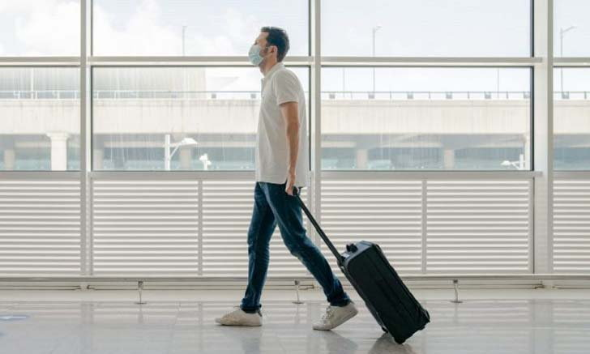

TRAVELING

News
เป็นเวลานานกว่า 1 ปี ที่นักท่องเที่ยวหลายคนรู้สึกหดหู่ อึดอัด ที่ไม่สามารถเดินทางไปไหนมาไหนข้ามประเทศได้อย่างสะดวก ทั้งประเทศต้นทางปิดหรือประเทศปลายทางไม่เปิด แต่หลังจากที่สถานการณ์ COVID-19 ในหลาย ๆ ประเทศดีขึ้น หรือเพราะจำเป็นต้องเปิดประเทศเพื่อขับเคลื่อนเศรษฐกิจ ก็ทำให้รัฐบาลหลายประเทศตัดสินใจเปิดรับนักท่องเที่ยวอีกครั้งเพื่อเริ่มต้นอุตสาหกรรมการท่องเที่ยว โดยเน้นรับนักท่องเที่ยวที่ได้รับวัคซีนครบ 2 เข็มแล้วก่อน
ฉะนั้น มาตรการยืนยันตัวตนด้วย “วัคซีนพาสปอร์ต” ว่าเป็นผู้ที่ได้รับการฉีดวัคซีนครบแล้ว ก็จะทำให้คนกลุ่มนี้มีโอกาสเดินทางได้ง่ายและเร็วกว่าคนอื่น บางประเทศกำลังเดินหน้าเปิดประเทศ แล้วเชิญชวนผู้ที่ฉีดวัคซีนครบแล้วให้เข้ามาเยือน
มีประเทศอย่างน้อย 12 ประเทศ ที่เปิดต้อนรับชาวอเมริกันที่ได้รับการฉีดวัคซีนครบแล้ว สำหรับนักท่องเที่ยวไทยที่ต้องการเดินทางไปยังประเทศปลายทางเหล่านี้ แนะนำให้ตรวจสอบข้อจำกัด กฎเกณฑ์ และมาตรการ COVID-19 ของรัฐบาลท้องถิ่นก่อน ถ้าอยากจะเดินทางกันเร็ว ๆ ก็ต้องรีบฉีดวัคซีนให้ครบ แม้ว่าประเทศเหล่านี้อาจไม่ใช่ประเทศปลายทางที่ใฝ่ฝัน แต่รับรองว่ามีสถานที่ท่องเที่ยวเด็ด ๆ ไม่แพ้กัน
12 ประเทศที่เปิดรับนักท่องเที่ยวที่ฉีดวัคซีน COVID-19 ครบแล้ว
- บาฮามาส
- เบอร์มิวดา
- เบลีซ
- หมู่เกาะบริติชเวอร์จิน
- โครเอเชีย
- เอกวาดอร์
- เฟรนช์โปลินีเซีย
- จอร์เจีย
- กรีซ
- ไอซ์แลนด์
- อิสราเอล
- เซเชลส์